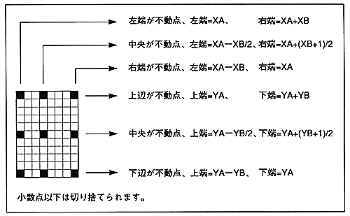

Return to previous page ｜ Return to menu ｜ Go to next page
- Drawing area
- Specify the fixed point coordinates for CMDXA and CMDYA. The fixed point specified by the zoom point (ZP) is drawn in the fixed point coordinates. The fixed point is the reference point for zooming the character.
Specified display width for CMDXB and CMDYB. The display width is the size to draw.
∙ The area where the character is drawn is determined by the zoom point bit (ZP), fixed point coordinates, and display width. When the fixed point coordinates are (XA, YA) and the display width is (XB, YB), it is as follows.
Figure 6.2 Drawing area

Return to previous page ｜ Return to menu ｜ Go to next page